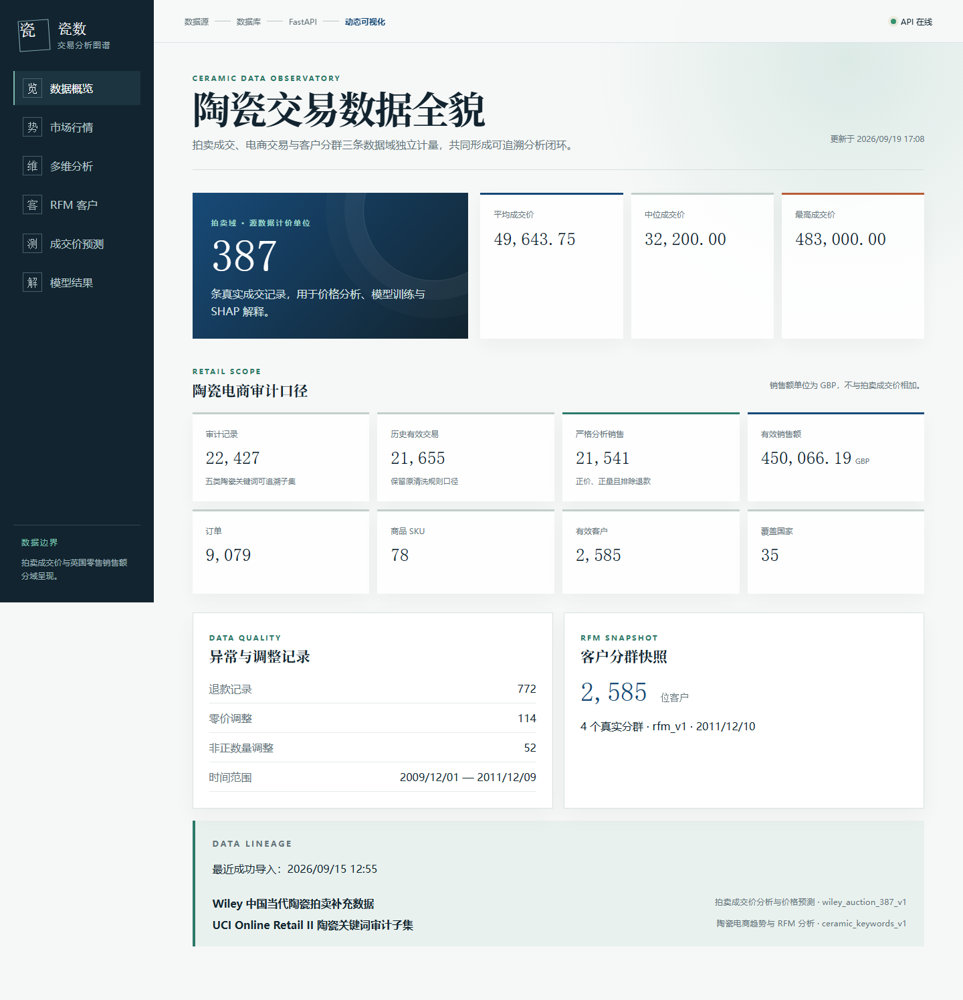

求职方向：数据分析 / 数据运营
不只看成交率，
继续追问成交后的价值。
主案例把营销线索、成交商家和订单商品连接起来，在统一的 90 天窗口中比较渠道质量。每个关键数字都能回到原始数据、指标口径和独立 SQL 验证。
01 / 可复算
Python 与 SQLite 独立对账02 / 有边界
GMV 不冒充 ROI 或 LTV03 / 面向业务
结论对应下一步验证动作主案例 · 获客质量与 90 天价值
渠道带来的成交，后来有没有产生可观测价值？
基于 Olist 两套公开匿名样本，将每条 MQL 连接到成交商家和订单商品。主分母始终保留未成交、不可映射和无订单线索，避免只分析“成功者”。
成交商家只有进入公开订单样本后才能继续观察；缺失的 462 个商家没有被当成 0，也没有被悄悄删除。渠道横向比较固定使用 2018 年 1–4 月首次接触的 4,695 条 MQL。
图 1 · 获客前端
成交率与 90 天激活率
同一条 MQL 分母；深色条为成交率，细标记为 90 天激活率。仅展示样本不少于 150 的明确来源。
图 2 · 全链路
从 MQL 到 90 天激活
图 3 · 质量矩阵
成交率 × 可观测 GMV/MQL
气泡大小代表 MQL 数；橙色为不可执行的未知来源。
图 4 · 后续价值
主要明确渠道的 90 天可观测 GMV/MQL
零订单 MQL 仍在分母中；同时展示成交商家映射覆盖，避免只看一根金额柱。
展开全部渠道：前端成交明细
| 原始来源 | MQL | 成交 | 成交率 | 解释 |
|---|
展开全部渠道：90 天价值与覆盖明细
| 来源 | MQL | 可观测商家 | 90 天激活 | 激活率 | GMV | GMV/MQL | 标记 |
|---|
先修归因，再做渠道增量验证
优先修复 `unknown` 与缺失来源，补齐渠道花费、退款净额和利润口径；在付费搜索与自然搜索上设计同一人群、同一周期的增量试验。社交渠道先从落地页和销售跟进入手诊断，而不是直接停投。
第二案例 · 零售经营分析
从交易明细中识别陶瓷相关商品的经营结构
从公开英国零售交易数据中按陶瓷相关关键词形成可追溯子集，完成清洗、销售汇总与客户分层，并把结果呈现在 BI 看板中。

边界：这是历史公开零售数据中的“陶瓷相关关键词子集”，不是中国陶瓷行业市场份额，也不是 387 条拍卖成交数据。销售额另按 21,541 条严格销售记录汇总，为 GBP 450,066.19。
方法、复现与边界
把最容易算错的地方公开
统一分母与观察窗
每条完整观察 MQL 保留一行；未成交、不可映射和无订单均为 0。窗口以首次接触为起点，采用 `[0, 90)`，第 90 天不计入。
控制 JOIN 粒度
1,278 个订单包含多个商家。商品 GMV 在商家商品行上归属，订单数才按 order_id 去重，避免把整单金额重复分配。
双重验证
Python 生成 MQL 级价值表；SQLite 用 6 组独立查询重算总量和渠道结果。单元测试覆盖第 89/90 天、取消订单、成交前订单和重复键。
结论边界
462 个成交商家不在公开订单样本；缺少成本、利润和随机实验。可观测 GMV 不是 ROI、完整 LTV 或因果增量。
AI 协作说明
Codex 协助资料检索、编码和页面实现；本人负责问题定义、口径确认、来源核对、异常审查、运行验证和理解最终结论。
Olist 数据由原发布方提供，原始 CSV 未在此仓库重新分发。数据页面标注 CC BY-NC-SA 4.0；本页用于非商业求职展示。